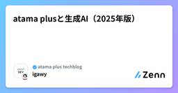
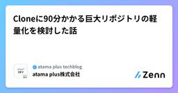
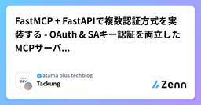
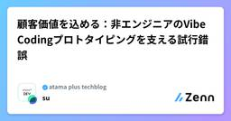
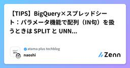

atama plus techblogのフィード
https://zenn.dev/p/atamaplus
EdTechスタートアップatama plusのメンバーが書いた技術記事を投稿していきます。
フィード

atama plusと生成AI（2025年版）
atama plus techblogのフィード
こちらはatama plus Advent Calendar 2025 5日目の記事です。こんにちは！atama plusのigawyです。みなさんはどの生成AIツールを使っていますか？2025年も生成AIツールが次々出て、様々なアップデートがありましたね。至るところで生成AIのTIPSや活用に関する記事を見かけます。では、それらのツールはどうやって使い始めましたか？組織としてツールを導入する場合、用途やコスト、セキュリティなど様々なことを考えた上で導入有無を判断したいところです。ただ、迅速にその状態に持っていくためにはリソースが必要です。組織によっては情シスの方がその役割を...
14時間前

Cloneに90分かかる巨大リポジトリの軽量化を検討した話
atama plus techblogのフィード
こんにちは、atama plusでエンジニアをしているsugiです。先日、32GBにまで肥大化した巨大Gitリポジトリの軽量化を検討する機会がありました。検討の結果、「技術的には1GBまで削減できるが、運用上の問題を考慮して軽量化は行わない」という判断に至りました。この記事では、なぜそのような判断に至ったのか、その経緯を共有します！ 現状：Cloneに90分かかるリポジトリ私が所属するチームでは、歴史的経緯により肥大化した巨大なリポジトリを抱えていました。Git履歴（.gitフォルダ）： 約32GBLFS実体込みのサイズ： 200GB超このリポジトリを新規参...
3日前

FastMCP + FastAPIで複数認証方式を実装する - OAuth & SAキー認証を両立したMCPサーバの実践例
atama plus techblogのフィード
はじめにatama plusにてデータエンジニアをしているTackungです。この記事はatama plus Advent Calendar 2025の12月3日の記事です！我々のチームでは現在、AI-readyなデータ基盤構築の一環として、社内データをAPI/MCPで利用可能にするサーバを開発しています。この記事では、FastMCP + FastAPIを使った複数の認証方式のインタフェースを1つのサーバ上で実現する実装プラクティスを紹介します。特に、「GoogleアカウントによるOAuth認証」と「サービスアカウントキー認証」を同時にサポートする方法について、実装時の工夫や...
4日前

顧客価値を込める：非エンジニアのVibe Codingプロトタイピングを支える試行錯誤
atama plus techblogのフィード
こんにちは、su（@yugawala）です。atama plusという教育×AIの会社でエンジニアをしています。プロダクトチームで開発をする傍ら、AIX推進室という部署で全社AI活用の推進も行っています。AIを活用した開発、してますか？ してますね！この記事では僕がチームで開発をしていくうえで行った取り組み・学びを紹介します。 顧客エキスパート × Vibe Codingプロダクト開発において、「顧客に受け入れられるものを作る」ことはとても重要かつ難しい課題の1つです。我々エンジニアもヒアリングに行ったりユーザーテストを行ったりしますが、やはり一番顧客のことを知っているのは...
5日前

【TIPS】BigQuery×スプレッドシート：パラメータ機能で配列（IN句）を扱うときは SPLIT と UNNEST を使おう 1
1
atama plus techblogのフィード
こんにちは！ atama plusでエンジニアをしているnaoshiです。この記事では、Googleスプレッドシートのデータコネクタ機能を使ってBigQueryを叩く際、パラメータ機能で配列（IN 句）を使おうとしてハマったポイントと、その回避策 を紹介します。同じ課題に遭遇した方の参考になれば幸いです。 はじめに弊社では、プロダクトのデータをBigQueryに集約しています。分析にはBIツールも導入していますが、簡易的なデータの可視化や、ビジネスサイドのメンバーが手軽にデータを扱いたい場面では、スプレッドシートを活用するケースもあります。その際に活用しているのが、スプレッ...
6日前

atama plus Advent Calendar 2025 記事まとめ
atama plus techblogのフィード
はじめにこんにちは！ atama plusの技術広報チームです。2025年も残すところあとわずかですね。atama plusでは、去年に続きまして今年もアドベントカレンダーを実施します。atamaplusメンバーが今年実施してきた様々な取り組みについてお届けできればと思います。ぜひご覧ください！ カレンダー(随時更新/タイトルは変わる可能性あります)日付曜日記事タイトル執筆者12/1月【TIPS】BigQuery×スプレッドシート：パラメータ機能で配列（IN句）を扱うときは SPLIT と UNNEST を使おうnaoshi12/2火...
1ヶ月前
第7回社内ハッカソンを開催しました！
atama plus techblogのフィード
こんにちは！atama plusのigawyです。今年の9/5(金)に約1年ぶりとなる社内ハッカソン「lumberjack day」を開催しました。今回のテーマは生成AI活用！台風にも負けず、職種横断で取り組んだ成果について紹介します。（テーマに沿って、この記事執筆においても生成AIを活用しつつ、人間によるレビュー・編集を重ねて作成しています） 1. はじめに：生成AI時代の新しい挑戦生成AIが急速に普及する中、我々の働き方も大きな変革期を迎えています。この変化を積極的に活用していくため、今回初めて「生成AI」をテーマとした社内ハッカソンを開催しました。狙いは、実際の業務...
2ヶ月前
Google Cloudで検索基盤を作ろうとして迷ったら（Vertex AI Serach,Vertex AI Vector Search）
atama plus techblogのフィード
こんにちは、atama plus でデータエンジニアをしている kumewata です。最近 Google Cloud 上の検索基盤を検討した時に、いろいろ迷いポイントがあったので、同じところで迷う人を減らせたらと思い記事を書いてみました 🙋 迷いポイントその 1： Vertex AI って N 個あんねんまず「google cloud 検索エンジン」と Google 検索してみると上から何番目かに「Vertex AI Search」が出てきます。機能紹介を見てみると、手元のデータでお手軽に検索基盤を用意できることがわかります。企業のアプリやエクスペリエンスのために Goo...
4ヶ月前
BigQueryへのデータ転送方式移行でマルチリージョンに苦しんだ話
atama plus techblogのフィード
はじめにはじめまして、4月からatama plusにデータエンジニアとしてジョインしたTackungです。弊社ではデータ基盤にBigQueryを採用しており、プロダクト側で日々発生するデータをTROCCOやGoogle Cloud Dataform、Composerを使った日次転送でデータを蓄積しています。今回、コスト削減を目的として一部のデータの転送方式をTROCCOからGoogle Cloud Dataform+Composerを使った方式に移行するプロジェクトに取り組みました。この移行によって、不要インスタンスの削除によるコスト削減ができました。この取り組みの中で、Bi...
4ヶ月前
Mastraワークフローの型安全性と変更容易性を高める設計指針
atama plus techblogのフィード
はじめにこんにちは、atamaplus の takei です。最近、趣味や業務でエージェントフレームワークであるMastra のワークフロー機能[1]を約 1 ヶ月ほど使ってみました。実際に使ってみて非常に便利である一方で、適切に設計しないと型安全性や変更容易性（保守性）に課題が生じやすいと感じました。特に以下のような課題に直面しました。ステップ[2] の中で getInitData[3] や runtimeContext[4] を使うと型推論が効かず、型安全でないコードになるステップがワークフロー定義に依存し、ワークフローの変更や他のワークフローでのステップの再利用が...
4ヶ月前
DataformでBigQueryのPython UDFを管理する事例紹介
atama plus techblogのフィード
こんにちは、atama plus でデータエンジニアをしている kumewata です。先日プレビュー版が公開された BigQuery の Python UDFを、Dataform 経由で利用してみたので紹介します。 背景弊社で利用している BigQuery 上で iCal 形式で保存しているデータ（弊社プロダクトで利用しているスケジュール機能で利用）があり、実際の日付のデータの変換にしたものを BigQuery 上の Warehouse/Mart で提供したいと考えていました。そのために iCal データを扱えるライブラリを利用したく、たとえば Python だと dateu...
4ヶ月前
QA主催！エンジニアとともに品質文化を育てるテスト勉強会の舞台裏
atama plus techblogのフィード
こんにちは！atama plusでQAエンジニアをしています、池上です。「エンジニアを巻き込んで品質について考えたいが、どう働きかければ良いかわからない」そんな悩みを抱えるQAエンジニアの方もいらっしゃるのではないでしょうか。この記事では、エンジニアを巻き込んで開催した「テスト勉強会」について、企画の背景から参加者のリアルな声までご紹介します。開発チーム全体で品質向上を目指したい方のヒントになれば幸いです。 1. なぜ「テスト勉強会」を開催したのか？QAチームが大切にしていること本題に入る前にatama plusのQAチームが大切にしていることを紹介させてください。...
5ヶ月前
【CircleCI】モノレポでpath-filteringを使って既存のデプロイフローを維持したまま無駄なデプロイを減らす
atama plus techblogのフィード
atama plusのtakeiです。この記事では、モノレポ構成においてCircleCIのpath-filteringを使って既存のデプロイフローを変更せずにデプロイを効率化する方法について紹介します。 背景と目的私たちの開発中のプロジェクト※では、frontend、backend、infrastructureがすべて1つのリポジトリで管理されているモノレポ構成を採用しています。（※新規プロダクトで、エンジニア2名の最小限の開発チームです）開発初期はCIの最適化が十分に行われておらず、たとえばfrontendのコードにわずかな変更を加えただけでも、backendやinfrast...
6ヶ月前
TSKaigiで登壇デビューしました 〜過去の自分に伝えたい登壇して良かったことと準備の流れ〜
atama plus techblogのフィード
はじめにこんにちは。atama plusのtakei（@yutake27）です。先日、TypeScriptのカンファレンス「TSKaigi2025」のライトニングトーク（LT）枠で人生で初めて登壇しました。これまで小さなイベントでさえ現地参加の経験がほとんどなく、登壇は自分には縁がないと思っていました。そんな自分が、なぜ登壇することになったのか、どんな準備をして、どんな経験を得たのかをまとめます。かつての自分のように「登壇はハードルが高い」と感じている方の参考になれば幸いです。参考までに当日の登壇資料はこちらです。TypeScriptのdeclaration mer...
6ヶ月前
Standalone時代のIonic Angularでion-iconをスマートに扱う！
atama plus techblogのフィード
Standalone時代のIonic Angularでion-iconをスマートに扱う！ 〜ion-icon-angular-standaloneのご紹介〜atama plusという教育の会社でエンジニアをしている@ippeiukaiです。Ionic AngularのStandalone構成が導入され、コンポーネントの取り扱い方が大きく変わりました。特に、ion-iconコンポーネントに関しては、使用するアイコンのSVGデータを事前にロードし、ioniconsライブラリのaddIcons関数を使って登録する必要が生じ、以前のようにname属性を指定するだけでは表示されなくなりまし...
6ヶ月前
useFormでバリデーション制御に悩んだ話 〜setErrorとisValid〜
atama plus techblogのフィード
TL;DRsetErrorするだけではisValidが変わらない素直にregisterやControllerのonChangeを使おう はじめにReact Hook Form（以下 RHF）は、軽量で直感的に使えるフォームライブラリとして、多くのReactプロジェクトで利用されています。実際に使ってみると、register や Controller を通して簡単にバリデーションを設定でき、フォームの状態も formState を通じて一括管理できるので非常に便利です。しかし、実際の開発では「ちょっとした例外的なケース」にぶつかることがあります。今回私が遭遇したのはその...
7ヶ月前
作って理解するModel Context Protocol (MCP) Server
atama plus techblogのフィード
はじめにModel Context Protocol (MCP) は、AIモデルとユーザーのデータソースを安全に接続するための規格です。この記事では、MCP Serverの実装を通じて学んだ、MCPの技術概要や通信の仕様について解釈してみます。 MCPの技術的概要と通信インターフェース MCPとは何かModel Context Protocol (MCP) は、AIアシスタントと外部データソース・ツールを接続するための標準プロトコルです[1]。ClaudeやCursorなどのAIアシスタントが、ユーザーの許可したデータにアクセスできるようにする橋渡し役を担います。...
8ヶ月前
langchain/openevalsでLLM-as-a-judgeの基本を理解
atama plus techblogのフィード
はじめにLLMアプリケーションを本番環境にデプロイする際、従来のソフトウェアテストと同様、評価は非常に重要な役割を果たします。適切な評価を行わなければ、モデルが期待通りに動作しているかどうかを確認することができません。今回、LangChainが提供するopenevalsというライブラリを使用して、複数のLLMモデルの出力を比較評価する方法を試してみたので書き留めておきます。 LLM-as-a-judge とはLLM-as-ajudgeとは、他のAIモデルのパフォーマンスを含め、様々なタイプのコンテンツ、反応、パフォーマンスを評価するためにLLMを使用することを指します。...
8ヶ月前
atama plusのSREチーム：EdTechサービスを支えるインフラの舞台裏と採用情報
atama plus techblogのフィード
こんにちは！ atama plusの技術広報チームです。この記事では、現在採用を強化中[1]のSREチームについて詳しくご紹介します。atama plusは、AIを活用した教育サービスを提供するEdTech企業です。塾・予備校向けBtoB事業の進化、「atama＋塾」フランチャイズ事業の立ち上げ、大学への高大接続プログラムの提供など、新たな取り組みを次々と展開しています。このような事業拡大と増加するユーザーに対応するため、スケーラブルで可用性の高いクラウドインフラの設計・実装・運用を担当するSREエンジニアを募集しています。私たちと一緒に、教育の未来を支えるインフラを構築しませんか...
1年前
2024年のatama plus × Angular
atama plus techblogのフィード
atama plusでプロダクトのWebエンジニアをやっている @rettar5 です。今日はアドベントカレンダー最終日ということで、この1年で行ったatama plusでのAngularに関する取り組みをまとめながら振り返ります。 atama plusとAngularatama plusは「教育に、人に、社会に、次の可能性を。」というミッション実現に向かって活動しているスタートアップです。2017年の設立からAI教材「atama＋」というプロダクトを作っており、「塾のタブレットにアプリをインストールして学習をしてもらう」という体験の実現のため、Angular x Ionicと...
1年前